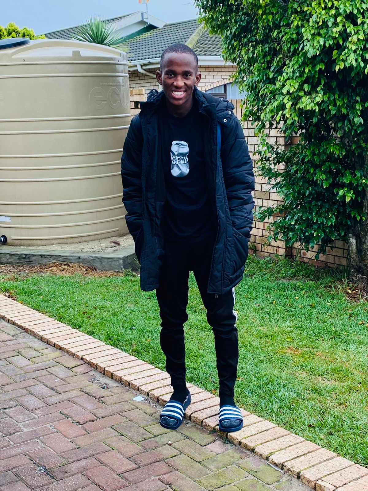

Hi, I am Sasebola Karabo
I am a passionate third-year BCom Computer Sciences and Information Systems student at Nelson Mandela who enjoys creating modern and responsive websites. I am currently learning web development and improving my programming skills every day.
This Portfolio showcases my learning journey, technical skills, and my future goals in the Technology Industry.
What Am I Learning
HTML & CSS
Building structured web pages and designing attractive layouts.
JavaScript
Adding interactivity and improving user experience on websites.
Responsive Design
Making websites work on all devices.
Why I Love Technology
Technology allows people to solve problems, improve businesses, and make communication easier. I enjoy learning how websites and software systems work because they are important in today's digital world.
My goal is to become a professional software and web developer who creates systems that help businesses and communities.